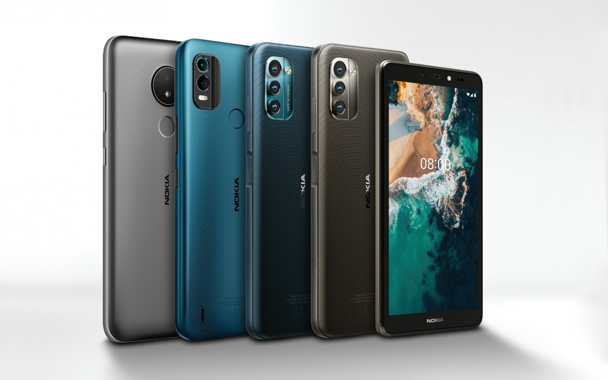
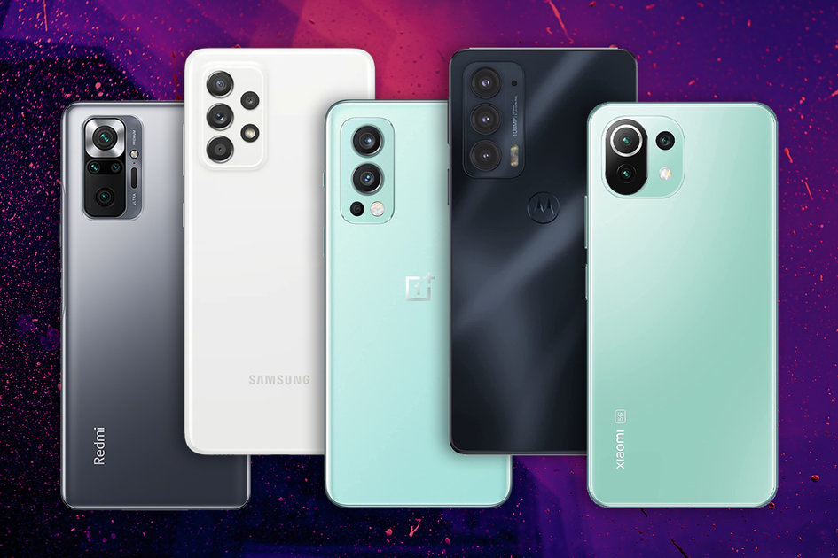

Welcome To MyPhone
Iphone Mobile
Samsung Mobile
Huawei Mobile
My Phone 
Login
Welcome to Cell Phone Shop

Smart Phone
Smartphone is a term given to the category of modern mobile phones that combine two main features: the ability to communicate through a cellular communication system and carry a sophisticated operating system, and most, if not all, use the touch screen as an advanced user interface and run mobile applications, And if there is no agreement between the mobile manufacturers on a unified definition of the smartphone, some of them consider the smartphone to be the phone that provides the advantages of browsing the Internet and synchronizing email and contains a full virtual keyboard, but the correct and most acceptable definition today is that it is the mobile that works on one The following operating systems: iOS, Android, Windows Phone, Symbian, Linux or BlackBerry.